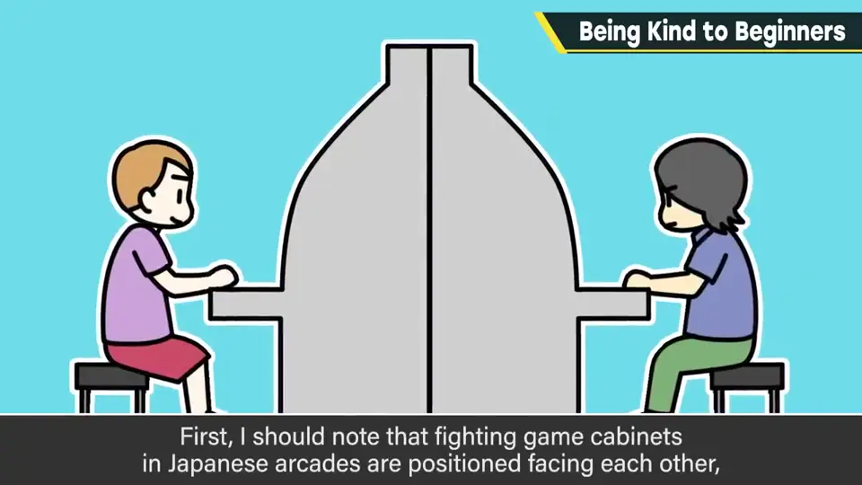
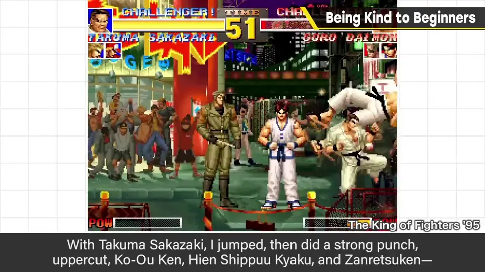
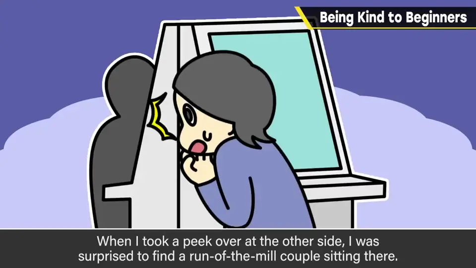
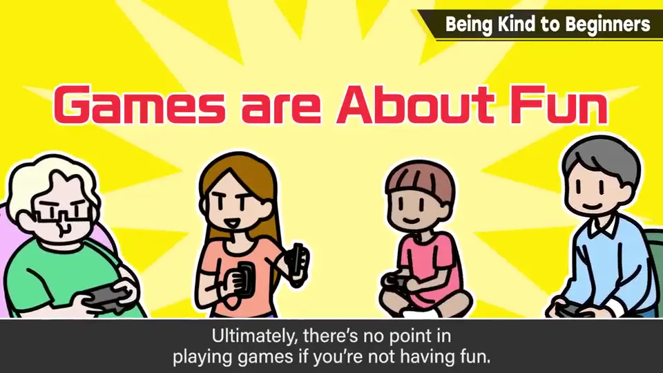
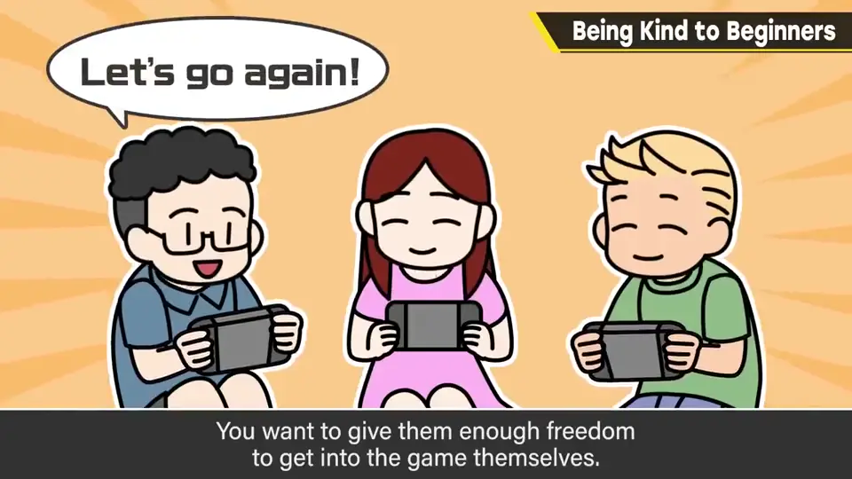

速览
樱井讲一段玩格斗游戏的苦涩回忆（不是被抢了钱之类）。日本游戏中心的对战游戏，机台是面对面摆放的，所以彼此看不到对手是谁。当时他曾连胜约 50 场，至少不是不擅长格斗游戏（现在不行了）。在玩《拳皇 '95》时有人乱入，他用坂崎琢磨跳跃重拳、上勾拳、虎煌拳、飞燕疾风脚、断裂拳——含三种必杀技的豪华连段漂亮地打进去。但感觉不对劲、太没手感了；悄悄看向对面，竟是一对普通情侣，而且操作的是女生——「完蛋了」。最后一局换成男友，他手下留情，结果只让人更难受。他想那对情侣大概只是随便逛进游戏中心想玩一下，却被一上来就打得惨败。从那以后他几乎不再野战。有人说对战时放水没礼貌，并非如此——那只限于对方明确希望你全力时。游戏不能玩得开心就没有意义；对刚开始的人，要能温柔地引导。无论对战还是单人，从初次接触到被吸引进游戏世界之前，都应有意识地降低门槛。难在于：指导过头、像被牵着手走，周围吵吵嚷嚷地带着玩，反而会让人冷掉——也想要适度的自由度和「自己走进去」的演出。游戏最难的是让人开始玩；对于因小契机想玩的人，请温柔对待，别让他放弃游戏。——「你还好意思说？」是的，对不起。
1. 苦涩的回忆：《拳皇 '95》 0:04
樱井想讲一段自己玩格斗游戏时的苦涩回忆（倒不是被抢了钱之类的）。
首先，日本游戏中心的对战游戏，机台是背对背、面对面摆放的，所以彼此不知道乱入的对手是谁。当时他曾连胜约 50 场，至少不是不擅长格斗游戏（现在就不行了）。


玩《拳皇 '95》时有人乱入。他用坂崎琢磨，以跳跃重拳 → 上勾拳 → 虎煌拳 → 飞燕疾风脚 → 断裂拳，含三种必杀技的豪华连段漂亮地打了进去。
但感觉不对劲，太没手感了。悄悄看向对面——竟是一对普通情侣，而且在玩的是女生。「完蛋了」。最后一局换成了男友，他手下留情，却只让场面更尴尬。

他猜那对情侣大概只是随便逛进游戏中心想玩一下，却在不明所以的游戏里一上来就被打得惨败。从那以后，他几乎不再玩格斗游戏的野战了。
2. 游戏要玩得开心才有意义 1:40
有人说对战游戏里放水是没礼貌，并不是这样——那只限于对方明确希望你全力以赴的时候。

3. 但别手把手拉着走 2:02
难的是：指导过头，变成像被牵着手带走、周围人七嘴八舌地带着玩，反而会让人冷掉。也需要适度的自由度，以及「自己走进去」的演出。

自测题
1. 樱井在《拳皇 '95》中的苦涩经历是什么？
他用豪华连段痛扁了乱入者，结果对面是一对随便来玩的普通情侣，从此几乎不再野战。 0:41
2. 樱井认为对战时放水是否没礼貌？
不是；只有对方明确希望你全力时才算。游戏要玩得开心才有意义。 1:40
3. 引导新手时要注意避免什么？
指导过头、像牵着手被带走，反而让人冷掉；要留有适度自由度和自己走进去的演出。 2:02